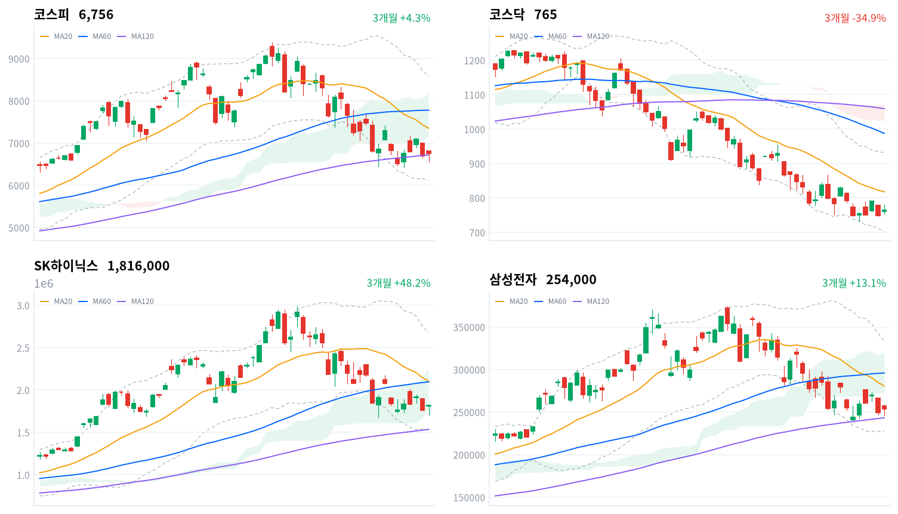

오늘 상승의 출발점은 두 갈래였다. 엔비디아의 네이버 투자 유치(1조4,809억원)가 인터넷·AI 테마를 직접 밀어올렸고, 지난 주말 한미 AI 서밋에서 나온 삼성전자-브로드컴·SK하이닉스-엔비디아의 대규모 메모리·파운드리 협력 소식이 코스피 갭상승을 견인했다. 장중에는 창신메모리 상하이 상장 폭등이 반도체 수급을 일부 분산시키며 코스피가 6,600선까지 밀리는 변동성을 만들었지만, 낙폭은 오후 내내 되돌려졌다.
외국인이 코스피에서 2조8,811억원을 대량 순매도(당일 잠정)했음에도 기관(+8,595억원)·개인(+1조9,788억원)이 이를 받아내며 지수를 방어했다. 비차익 프로그램 순매도(2조6,582억원)가 외국인 매도와 방향이 일치해 오늘 매도의 상당 부분이 방향성 자금이었음을 시사하지만, 동시에 SK하이닉스 레버리지(3.57조)가 인버스(2.61조)를 웃돌 만큼 개인의 상승 베팅도 견조해 매도 압력을 상쇄했다. 코스닥은 기관(+2,731억원) 순매수 우위 속에 장중 내내 상승세를 지키며 코스피보다 뚜렷한 아웃퍼폼을 기록했다.
다음 거래일에는 오늘 잠정치인 외국인·기관 수급이 확정되며 매도 강도가 유지되는지부터 확인해야 한다. 기술적으로는 코스피가 MA120(6,720.27) 위에 턱걸이로 올라선 상태라 이 지지선을 지키는지가 첫 관문이고, 이를 지키면 일목 전환선(6,926.6)·구름 하단(7,138.17)까지 반등 여지가 있는 반면 다시 내주면 스윙 저점(6,429.03)까지 밀릴 수 있다. 대외적으로는 창신메모리發 중국 메모리 굴기 이슈가 추가로 부각되는지, 대내적으로는 한미 AI 서밋 후속 계약의 구체적 집행 소식이 다음 거래일 수급의 방향을 가를 변수다.
| 지수 | 종가 | 등락률 | 일중 고가 / 저가 |
|---|---|---|---|
| 코스피 | 6,755.75 | +0.97% | 6,806.27 / 6,557.39 |
| 코스닥 | 764.86 | +2.22% | — |
코스피는 전일 종가(6,690.62) 대비 갭상승 출발해 시가 6,806.27로 개장했고, 이 시가가 그대로 이날 장중 고가가 됐다. 개장 직후부터 매도세가 이어지며 09시30분 6,765.28, 10시 6,722.35를 거쳐 10시30분 6,573.94까지 밀렸는데, 이 구간이 장중 저가(6,557.39)에 근접한 저점이었다.
중국 창신메모리(CXMT)의 상하이 상장 폭등 소식이 전해지며 반도체 대형주로 쏠렸던 수급이 일부 분산됐다는 게 이 급락의 배경이다. 이후 11시 6,655.45로 반등했으나 정오 무렵까지는 6,600~6,640선의 좁은 박스권에서 등락하며 방향을 탐색했다.
오후 들어 14시 6,687.11, 14시30분 6,744.61로 낙폭을 빠르게 되돌리기 시작했다. 15시 6,723.29로 잠시 숨을 고른 뒤 마감 직전 15시30분 6,755.74까지 재차 올라서며 6,755.75(+0.97%)로 거래를 마쳐, 오전 급락분을 오후 내내 되돌린 하루였다.
코스닥은 개별 30분봉 데이터가 없어 장중 궤적을 그릴 수는 없지만, 장중 내내 상승 우위를 유지하며 코스피(+0.97%)보다 뚜렷하게 앞선 +2.22%로 마감한 것으로 확인된다.
일중 궤적은 코스피 30분봉 기준이며 코스닥 일중 고가·저가·30분봉은 이번 데이터 파이프라인에 미포함. 촉매 배경은 파이낸셜뉴스·헤럴드경제·뉴스1·이투데이·한국경제 보도 참조.

최근 3개월 일봉(캔들)에 이동평균(20·60·120일)·볼린저밴드(20일±2σ)·일목 구름대를 오버레이 — 코스피·코스닥·SK하이닉스·삼성전자, 상승 녹색·하락 적색.
위 일봉 차트의 이동평균(20·60·120일)·볼린저밴드(20일±2σ)·일목 구름대를 종가 기준으로 계산한 조건부 시나리오다. 코스피는 오늘 상승으로 장기 지지선인 MA120을 근소하게 회복했지만 여전히 구름 아래에 있고, 코스닥은 완연한 역배열 국면이 이어지고 있어 반등의 지속성을 가르는 관문이 서로 다르다.
코스피는 종가 6,755.75포인트로 MA20(7,350.36)·MA60(7,776.71)은 여전히 밑돌지만 MA120(6,720.27)은 근소하게(괴리율 +0.53%) 웃돌아, 장기 지지선 위에 턱걸이로 올라선 혼조 국면이다. 다만 구름(7,138.17~8,165.11) 아래에 있어 추세 자체는 아직 하락 우위다. 일목 전환선 6,926.6을 회복하면 구름 하단 7,138.17·MA20 7,350.36을 거쳐 MA60 7,776.71·일목 기준선 7,907.31, 구름 상단 8,165.11, 볼린저 상단 8,579.68·스윙 고점(20일) 8,667.73까지 반등 여지가 열린다. 반대로 MA120 6,720.27을 다시 내주면 스윙 저점 6,429.03, 볼린저 하단 6,121.04까지 밀릴 수 있다.
코스닥은 종가 764.86포인트로 MA20(817.9)·MA60(987.51)·MA120(1,059.15)이 모두 위에 쌓인 역배열 상태라, 오늘의 반등에도 하락 추세 자체가 바뀐 것은 아니다. 구름(1,024.13~1,068.94)과는 아직 260포인트 가까이 떨어져 있어 추세 전환을 논하기는 이르다. 일목 전환선 781.24와 MA20 817.9를 차례로 넘어서면 일목 기준선 866.11·볼린저 상단 931.61을 거쳐 스윙 고점(20일) 955.45까지 반등 여지가 있고, 스윙 저점 730.81·볼린저 하단 704.19를 이탈하면 신저점 탐색이 불가피하다.
SK하이닉스는 정배열(MA20 2,102,100원>MA60 2,095,967원>MA120 1,534,450원)이 유지되는 가운데 구름(1,778,000~2,255,250원) 안에 있는 눌림목 구간으로, 종가 1,816,000원이 그 안쪽에 자리한다. 일목 전환선 1,924,500원을 회복하면 MA60 2,095,967원·MA20 2,102,100원을 거쳐 구름 상단이자 일목 선행스팬A인 2,255,250원, 일목 기준선 2,332,500원을 넘어서면 볼린저 상단 2,675,107원·스윙 고점 2,742,000~2,987,000원까지 반등 여력이 있다. 구름 하단 1,778,000원을 내주면 스윙 저점(20일) 1,678,000원, 볼린저 하단 1,529,093원·MA120 1,534,450원 부근, 최후에는 스윙 저점(60일) 1,281,000원까지 조정이 열린다.
삼성전자는 구름 하단(272,500원) 아래에서 MA120(243,174원) 위에 걸쳐 있는 혼조 구간으로, 이 지지선을 지키는지가 단기 방향을 가른다. 일목 전환선 262,250원·구름 하단 272,500원을 차례로 넘어서면 MA20 280,525원·MA60 295,933원을 거쳐 일목 기준선 307,250원, 구름 상단 320,625원·볼린저 상단 333,401원·스윙 고점 343,000~374,500원까지 반등 여지가 있다. 반대로 MA120 243,174원과 스윙 저점(20일) 240,000원을 동시에 이탈하면 볼린저 하단 227,649원, 최후 지지선인 스윙 저점(60일) 218,500원까지 밀릴 수 있다.
기계적으로 계산된 조건부 기술 셋업이며 투자 권유가 아니다. 레벨은 익일 종가로 갱신된다.
| 순매수 (억원) | 개인 | 외국인 | 기관 |
|---|---|---|---|
| 코스피 | +19,788 | -28,811 | +8,595 |
| 코스닥 | -1,550 | -1,422 | +2,731 |
코스피에서는 외국인이 2조8,811억원(당일 잠정)을 대량 순매도했다. 전 거래일(7/24)에도 3조2,683억원을 순매도해 이틀 연속 대규모 매도가 이어진 셈인데, 창신메모리(CXMT) 상하이 상장 폭등으로 부각된 중국 메모리 굴기 경계감이 이번 매도를 자극했을 가능성이 크다.
반면 기관(+8,595억원)과 개인(+1조9,788억원)은 나란히 순매수하며 외국인 매도 물량을 받아냈다. 두 매수 주체의 합산 순매수(2조8,383억원)가 외국인 순매도 규모에 근접할 만큼 커, 지수가 강보합으로 버틸 수 있었던 힘이 여기서 나왔다.
외국인이 팔고 지수는 오르는 전형적인 디커플링 구도다. 대규모 외국인 매도에도 코스피가 6,755.75(+0.97%)로 마감했다는 점은 국내 기관·개인의 매수 여력이 시장을 방어했다는 신호로 읽을 수 있다. 코스닥에서는 외국인(-1,422억원)·개인(-1,550억원)이 소폭 순매도한 반면 기관이 2,731억원 순매수하며 매수 우위를 지켰고(당일 잠정), 이 기관 수급이 코스닥의 상승 우위 지속에 힘을 보탰다. 다만 세 시장 모두 수치는 당일 잠정치라 익일 확정 과정에서 규모가 조정될 수 있어, 외국인 매도 강도가 유지되는지는 다음 거래일 확정치로 재확인해야 한다.
| 순매수 (억원) | 차익거래 | 비차익거래 | 전체 |
|---|---|---|---|
| 코스피 | +631 | -26,582 | -25,951 |
| 코스닥 | +33 | -1,135 | -1,102 |
코스피 프로그램 매매는 비차익거래가 2조6,582억원 순매도를 주도했고 차익거래는 631억원 순매수에 그쳐 방향이 엇갈렸다. 비차익거래는 선물·현물 가격차를 노린 기계적 차익거래가 아니라 바스켓 단위의 방향성 매매를 반영하는데, 이 매도 방향이 외국인 순매도(2조8,811억원, 당일 잠정)와 일치해 오늘 외국인 매도의 상당 부분이 비차익 프로그램을 경유했을 가능성을 시사한다.
코스닥 프로그램은 비차익 1,135억원 순매도가 전체 순매도(1,102억원)의 대부분을 차지했고 차익거래는 33억원 순매수에 그쳐 영향이 미미했다. 두 시장 모두 비차익이 방향을 결정했다는 점에서, 오늘 매매는 선물 연계 재정거래보다 기관·외국인의 실제 포지션 조정 성격이 짙었다.
수급·프로그램 매매 수치는 발행 시점 기준 당일(2026-07-27) 잠정치이며, 익일 확정 과정에서 조정될 수 있다.
| 종목·그룹 | 구분 | 거래대금 |
|---|---|---|
| SK하이닉스 | 개별종목 | 6.79조 |
| 삼성전자 | 개별종목 | 5.70조 |
| SK하이닉스 레버리지 | 단일종목 롱 ×3 | 3.57조 |
| SK하이닉스 인버스 | 단일종목 숏 ×1 | 2.61조 |
| 지수 레버리지 ETF | 지수 롱 ×3 | 1.92조 |
| 지수 인버스 ETF | 지수 숏 ×6 | 1.80조 |
| KODEX 200 | 지수 ETF | 1.45조 |
| 삼성전자 레버리지 | 단일종목 롱 ×2 | 1.09조 |
| SK이터닉스 | 개별종목 | 0.66조 |
| NAVER | 개별종목 | 0.61조 |
거래대금 최상위는 SK하이닉스(6.79조)와 삼성전자(5.70조)가 1·2위를 차지해, 한미 AI 서밋발 메모리·파운드리 협력 기대가 반도체 대형주로의 자금 쏠림을 이어갔다. 두 종목의 단일종목 레버리지·인버스 ETF까지 합치면 반도체 관련 거래대금은 약 20조원에 육박한다.
방향성 심리를 보면 SK하이닉스는 레버리지(롱, 3.57조)가 인버스(숏, 2.61조)를 웃돌아 개인 투자자의 상승 베팅이 우위였다. 지수 레버리지 ETF(1.92조)도 지수 인버스 ETF(1.80조)를 소폭 앞서 같은 흐름을 보였는데, 이는 오늘 개인이 현물시장에서도 1조9,788억원을 순매수(당일 잠정)한 방향과 일치한다.
NAVER(0.61조)가 16.03% 급등하며 거래대금 상위 10위에 이름을 올려 엔비디아 투자 유치 소식의 파급력을 확인시켰다. SK이터닉스(0.66조)도 상위권에 들었으나 구체적 등락 배경은 이번 리서치에서 확인되지 않았다.
거래대금은 정규화 집계 — 같은 기초자산 ETF를 방향별로 묶고 해외지수 ETF는 제외했다. 원자료는 백만원 단위이며 표에는 조원으로 환산했다.
대표 섹터 ETF 기준 1일 수익률은 소프트웨어(+4.95%)가 1위, 반도체(+3.08%)·로봇(+2.38%)·은행(+1.67%)·헬스케어(+1.53%)가 뒤를 이었다. 방산은 -6.79%로 유일하게 큰 폭 하락했고 건설(-0.24%)·자동차(-0.32%)·철강소재(-0.41%)도 소폭 약세였다.
세부 GICS 업종(kr_industry.json, 60개) 기준으로 보면 인터넷과카탈로그소매(+7.42%, breadth 0.667)와 양방향미디어와서비스(+6.38%, breadth 0.688)가 상승률 1·2위를 차지했고, 두 업종 모두 breadth가 0.6을 웃돌아 '폭넓은 상승 주도'로 분류됐다. 네이버발 훈풍이 소수 종목에 그치지 않고 업종 전반으로 번졌다는 뜻이다.
반면 상승률 3위인 방송과엔터테인먼트(+4.70%)는 breadth 0.534로 '좁은 상승·개별종목'에 그쳐, 상승률만으로 주도 업종이라 부르기는 어렵다. 반도체와반도체장비(+2.29%, breadth 0.749, 총 171개 중 128개 상승)는 상승률 자체는 중위권이지만 breadth가 가장 높은 축에 속해, 대표 섹터 ETF의 반도체(+3.08%) 상승을 폭넓은 종목군이 뒷받침했음을 확인할 수 있다.
1D~1Y 막대는 대표 섹터 ETF 수익률, 세부 breadth·주도 판정은 60개 GICS 업종 상승 종목 비중 교차 확인 기준.
| 테마 | 등락률 |
|---|---|
| 인터넷 대표주 | +5.39% |
| AI 챗봇(챗GPT 등) | +4.45% |
| 온디바이스 AI | +4.43% |
| 전자결제(전자화폐) | +4.14% |
| 피지컬 AI/휴머노이드 로봇 | +4.14% |
| 제습기 | +4.09% |
| 지능형로봇/인공지능(AI) | +4.05% |
| 로봇(산업용/협동로봇 등) | +3.96% |
| 전자파 | +3.46% |
| 3D 프린터 | +3.45% |
| 시스템반도체 | +3.22% |
| 마리화나(대마) | +3.12% |
| 스마트팩토리(스마트공장) | +3.03% |
| 모바일솔루션(스마트폰) | +2.90% |
| 음원/음반 | +2.82% |
테마 상위는 인터넷 대표주(+5.39%)가 1위를 차지했다. 네이버가 엔비디아로부터 1조4,809억원 투자를 유치하며 16.03% 급등한 소식이 직접적인 동인으로, 전자결제(+4.14%)에도 후광 효과가 번졌다.
AI 챗봇(+4.45%)·온디바이스 AI(+4.43%)·지능형로봇/인공지능(+4.05%)은 한미 AI 서밋에서 나온 삼성전자-브로드컴·SK하이닉스-엔비디아 대규모 협력 소식의 연장선이다. 피지컬 AI/휴머노이드 로봇(+4.14%)·로봇(산업용/협동로봇 등)(+3.96%)도 같은 흐름을 타며 지난주부터 이어진 로봇주 강세를 이어갔다.
시스템반도체(+3.22%)는 AI 서밋발 반도체 공급계약 훈풍에도 창신메모리 상장 변수 속에서 상대적으로 견조했다. 인터넷 대표주 테마는 인터넷과카탈로그소매(+7.42%, breadth 0.667)·양방향미디어와서비스(+6.38%, breadth 0.688) 업종의 폭넓은 상승과 거래대금 상위에 오른 NAVER(0.61조)로 뒷받침돼, 상승률과 거래 실체가 함께 확인된다.
테마 랭킹·등락률은 kr_theme.json 기준.
| 종목 | 등락률 | 비고 |
|---|---|---|
| NAVER | +16.03% | 엔비디아 1조4,809억원 유증 투자 유치, 거래대금 상위 10위(0.61조) |
| 카카오 | +1.79% | NAVER 대비 온도차 뚜렷 |
| SK하이닉스 | - | 거래대금 1위(6.79조), 한미 AI 서밋 메모리 공급계약 수혜주, 등락률 데이터 미확인 |
| 삼성전자 | - | 거래대금 2위(5.70조), 브로드컴 파운드리 협력 수혜주, 등락률 데이터 미확인 |
| SK이터닉스 | - | 거래대금 상위(0.66조), 등락 배경 미확인 |
오늘의 주인공은 네이버였다. 엔비디아로부터 1조4,809억원 규모 제3자배정 유상증자 투자를 유치했다는 공시에 16.03% 급등해 27만1,500원에 마감했고, 거래대금도 0.61조원으로 상위 10위에 들었다. 같은 인터넷 대장주인 카카오는 1.79% 상승에 그쳐 두 종목 간 온도차가 뚜렷했다.
SK하이닉스(거래대금 1위, 6.79조)와 삼성전자(2위, 5.70조)는 한미 AI 서밋에서 나온 대규모 메모리·파운드리 협력 계약의 직접 수혜주로 꼽혔다. 다만 이번 데이터 파이프라인에는 개별 종목 등락률이 포함되지 않아, 업종 단위 반도체와반도체장비(+2.29%, breadth 0.749) 상승으로 강세 방향만 교차 확인할 수 있었다.
SK이터닉스(0.66조)도 거래대금 상위에 이름을 올렸으나 구체적 등락 배경은 이번 리서치에서 확인되지 않았다.
종목별 등락률은 research_notes.md에 근거가 확인된 항목(NAVER·카카오)만 표기했으며, kr/data 원자료에는 개별 종목 시세가 포함되지 않는다.
이번 데이터 파이프라인에는 원/달러 환율·국고채 금리 수치가 아직 포함되지 않아 이번 호에는 반영하지 못했다. 다만 오늘 외국인이 코스피에서 2조8,811억원을 대량 순매도(당일 잠정)한 점은 통상 달러 매수·원화 매도 압력으로 이어지는 흐름이라, 원화 약세 쪽에 무게가 실릴 가능성이 있다.
한국은행이 지난 7월 금통위에서 기준금리를 2.50%에서 2.75%로 인상해 3년6개월 만에 긴축 기조로 전환한 점도 배경으로 작용한다. 금리 인상은 통상 원화에 우호적인 재료지만, 오늘처럼 외국인이 대규모로 매도하는 날에는 그 효과가 가려질 수 있다.
환율·국고채 수치는 데이터 확보 후 다음 호부터 반영할 예정.
한국은행 금통위는 7월 회의에서 기준금리를 연 2.50%에서 2.75%로 0.25%p 인상하며 2023년 1월 이후 3년6개월 만에 긴축 기조로 돌아섰다. 반도체 호황에 따른 견조한 성장세와 목표를 웃도는 물가 상승이 맞물린 결과로, 향후 추가 인상 여부는 물가·GDP 지표 흐름에 달려 있다.
창신메모리(CXMT)의 상하이 상장과 공모가 대비 최대 535% 폭등은 산업정책적 성격의 촉매이기도 하다. 중국의 메모리 반도체 자립 의지가 시장 가격으로 확인되면서, 국내 반도체 대형주로의 수급 쏠림이 앞으로도 이런 변수에 흔들릴 수 있음을 보여준 하루였다.
밸류업 프로그램·금융투자소득세·상법 개정·통상관세 등 다른 정책 이슈는 이번 회차 리서치에서 당일 시황과 직접 연동된 새 소식이 확인되지 않았다. 지정학 리스크는 반도체 경기 호조에도 불구하고 하방 변수로 계속 거론되고 있다.
정책 배경은 다음(금통위 종합)·한국경제 보도 인용.